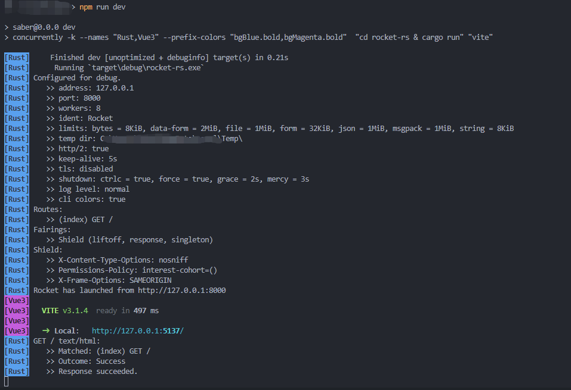

Vue3 Template
一个将rust（也可以是其他后端）和vue3 结合的小套路
所需工具
node,npm,rust环境npm i -D concurrently，用于在package.json中同时启用前端和后端
项目初始化
首先我们创建一个vue3 项目，然后在vue3 项目中再添加rust 子项目，通过修改package.json 中的相关配置，可以同时启动前端和后端的调试工作。
创建vue3 项目
为简单起见，这里在创建vue3 项目时，并没有启用全部特性。因为是新手嘛，贪多嚼不烂
> npm init vue@latest # 初始化vue3 项目
√ Project name: ... project_name
√ Add TypeScript? ... No
√ Add JSX Support? ... No
√ Add Vue Router for Single Page Application development? ... Yes
√ Add Pinia for state management? ... Yes
√ Add Vitest for Unit Testing? ... No
√ Add Cypress for both Unit and End-to-End testing? ... No
√ Add ESLint for code quality? ... No
Scaffolding project in D:\...\project_name...
Done. Now run:
cd project_name
npm install
npm run dev创建Rocket 项目
> cd project_name
> cargo new src-rocket --bin
> cd src-rocket在创建Rocket 项目后，我们需要做一些配置：
- 在
Cargo.toml中添加依赖：rocket = "0.5.0-rc.2" - 在rust 项目根目录下新建
Rocket.toml，并配置默认启动参数（可选）
修改完配置后，我们就可以向src-rocket/src/main.rs 中添加处理http 请求的代码了
// main.rs
#[macro_use] extern crate rocket;
#[get("/")]
fn index() -> &'static str {
"Hello, world!"
}
#[launch] // launch 宏中会定义一个main 函数，所以项目不需要重复定义main 函数
fn rocket() -> _ {
rocket::build().mount("/", routes![index])
}开发调试
为了开发调试方便，我们需要分别对vue3 和rocket 项目修改一些配置。
Vue3 Proxy
为了能够找得到服务的端口，我们需要修改vite.config.js。将后端端口（默认为8000，可以在创建Rocket 项目中修改）转发到指定url 下：
import { fileURLToPath, URL } from 'node:url'
import { defineConfig } from 'vite'
import vue from '@vitejs/plugin-vue'
// https://vitejs.dev/config/
export default defineConfig({
plugins: [vue()],
resolve: {
alias: {
'@': fileURLToPath(new URL('./src', import.meta.url))
}
},
server:{
open:true,
host:'127.0.0.1',
port:8001, // vue3 项目启动的端口
https:false,
proxy:{ // 配置跨域
'/api':{ // /api 起始的url 会走代理
target:'http://127.0.0.1:8000/',
ws:true,
changeOrigin:true,
rewrite: (path) => path.replace(/^\/api/, '') // 重写url，将`/api` 去掉
}
}
}
})关于代理的更多配置，可以参考详细配置说明。
Rocket 路由
如果在配置vue3 代理时，重写路径时需要定向到自定义的路由，比方说：http://127.0.0.1:8000/api。就需要在Rust 代码中修改了。
启动调试
我们需要通过concurrently 库来同时启动后端与前端，并将输出合并在一个控制台中，于是需要在package.json 中添加下面行：
{
"scripts": {
"dev": "concurrently -k --names \"Rust,Vue3\" --prefix-colors \"bgBlue.bold,bgMagenta.bold\" \"cd rocket-rs & cargo run\" \"vite\"",
"build": "vite build",
"preview": "vite preview --port 4173"
},
"devDependencies": {
"@vitejs/plugin-vue": "^3.0.3",
"concurrently": "^4.1.0",
"vite": "^3.0.9"
}
}其中：
- 参数
-k表示在有一个程序退出时，会停止所有进程 --names "Rust,Vue3"分别为后面两条命令的进程名--prefix-colors "bgBlue.bold,bgMagenta.bold"用来表示进程名的显示样式
可以看到，参数的值可以是以逗号分隔的列表的形式。更多详细配置可以参考官方说明文档。配置完成后效果如下图所示：

打包编译
可以把编译好的vue 项目一起打包进rust 二进制文件中，但是目前没有心思去研究了。后面再填坑吧。
📅 2022-09-30 Aachen